Oct. 11–Nov. 19, 2015
Golden, CO
Information about the Lab-Corps cohort 1 teams, their technologies, and how Lab-Corps is helping the teams fine-tune their commercialization approaches are highlighted here.
- Argonne National Laboratory - Dynamic Aperture
- Argonne National Laboratory - Sonic LQ
- Idaho National Laboratory - ARAI
- Idaho National Laboratory - Switchable Polarity Solvent Forward Osmosis
- Lawrence Berkeley National Laboratory - Ring Burner
- Lawrence Livermore National Laboratory - C-BEST
- National Renewable Energy Laboratory - Eco-AC
- National Renewable Energy Laboratory - WISDEM
- Oak Ridge National Laboratory - CI-ReClad
- Oak Ridge National Laboratory - Tunation
- Pacific Northwest National Laboratory - Co-Culture Green
- Pacific Northwest National Laboratory - HYDRA
- Pacific Northwest National Laboratory - STARS
- Pacific Northwest National Laboratory - Sub Lambda.
Argonne National Laboratory - Dynamic Aperture
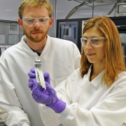
Team Members
Principal Investigator: Ray Conley, X-ray Optics Fabrication Section leader
Entrepreneurial Lead: Elina Kasman, X-ray Optics Fabrication Specialist
Industry Mentor: John Miller, president, Materials Science, Inc.
Technology Description: The device developed by the Dynamic Aperture team allows precise, real-time control of vapor deposition sources to improve the quality of thin films without the need to stop the manufacturing process to recalibrate sources. The resulting films enhance device yield, improve the performance of optics, and increase efficiency while reducing manufacturing costs. Possible applications have the potential to increase solar cell efficiency, improve performance of x-ray telescopes, and increase extreme ultraviolet lithography throughput. Through Lab-Corps, the team will identify potential customers, gain insight through the evaluation of market analysis, and make decisions regarding how best to pursue commercialization of the technology.
Argonne National Laboratory - Sonic LQ
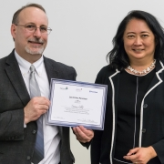
Team Members
Principal Investigator: Ralph Muehleisen, principle building scientist
Entrepreneurial Lead: Cathy Milostan, energy/environmental policy scientist
Team Member: Todd Levin, energy systems engineer
Industry Mentor: Bill Shadid, Shadid Consulting.
Technology Description: With the help of commercially available equipment, Argonne’s SonicLQ software is a game-changing, non-intrusive solution that uses sound waves to both find and quantify air leaking through enclosed spaces to improve estimates for weatherization repairs and energy savings potential. In contrast to current air leakage testing options, SonicLQ tests can occur in occupied buildings and during all phases of construction, giving energy service companies new opportunities to sell more testing contracts. Lab-Corps will help the team explore SonicLQ’s potential, develop a business plan, and decide whether to license the technology or start a new business.
Idaho National Laboratory - ARAI
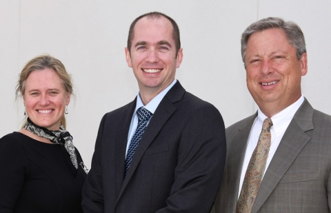
Team Members
Principal Investigator: Matthew Balderree, chief unmanned aircraft systems pilot
Entrepreneurial Lead: Corey Smith, executive director, Research and Business Development Center
Industry Mentor: Wendolyn Holland, managing director, Holland Consulting, LLC.
Technology Description: The Advanced Renewable Aerial Inspections (ARAI) technology utilizes unmanned aircraft systems (UAS) to perform safer, more economical inspections on multiple types of wind turbines, including off-shore wind turbines, to collect data. The UAS data can be used to help determine maintenance requirements and detect issues and trends to help wind farm operators, public utilities, turbine manufacturers, and maintenance companies make rapid, informed decisions in how they manufacture, build, deploy, and maintain their products. Through its participation in Lab-Corps, the team hopes to better understand the challenges of taking innovative ideas from concept to commercialization and, ultimately with the help of their commercialized technology, help industry provide additional U.S. energy jobs.
Idaho National Laboratory - Switchable Polarity Solvent Forward Osmosis
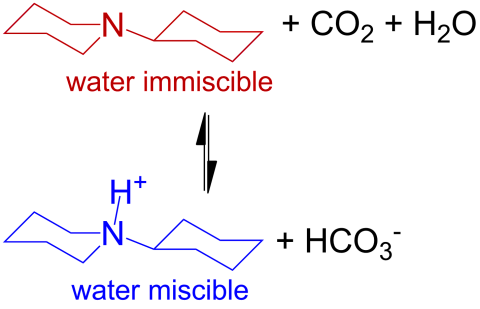Team Members
Principal Investigator: Aaron Wilson, research chemist
Entrepreneurial Lead: Carter Fox, research scientist
Industry Mentor: Shawn Perkins, business consultant, Small Business Development Center and vice president business operation, Advanced Ceramic Fibers LLC
Industry Mentor: David Noack, regional director, Small Business Development Center.
Team Description: Switchable polarity solvents (SPSs) are an exciting new class of materials that undergo a polarity shift upon being exposed to a chemical agent. The switch leads to profound changes in solubility and phase behavior, and SPSs display many of the beneficial characteristics of room temperature ionic liquids without the cost or difficulty of recycling. This team envisions a range of possible applications for this technology, but their initial target areas will be industrial water treatment and biomass fractionation. The use of SPSs in water treatment processes has the potential to cost-effectively obtain high water recoveries from high-salinity and high-fouling industrial waters. The team’s biomass project will use SPSs to fractionate biomass such that it can be merchandized, allowing the biomass industry to compete with the petrochemical infrastructure. With the help of Lab-Corps the team hopes to explore various paths forward, demonstrate the processes, and bring the technology to market.
Lawrence Berkeley National Laboratory - Ring Burner
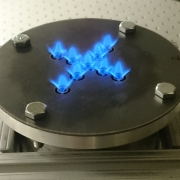
Team Members
Co-Principal Investigator: Peter Therkelsen, research scientist
Co-Principal Investigator: Vi Rapp, research scientist
Entrepreneurial Lead: Mike Tucker, principal scientific engineering associate
Industry Mentor: Michel Foure, Lawrence Berkeley National Laboratory
Industry Mentor: Kevin Henry, DACOR.
Technology Description: Ring Burner is based on Lawrence Berkeley National Laboratory’s (LBNL’s) patented low-emission technology that utilizes premixed fuel and air supply, as well as a simple flame stabilizing mechanism, to evenly heat a surface with minimal pollutant formation. The team has set its sights on deploying the technology to enhance the cooking experience in residential and commercial kitchens. Lab-Corps will help the team develop other value propositions in response to market feedback.
Lawrence Livermore National Laboratory - C-BEST
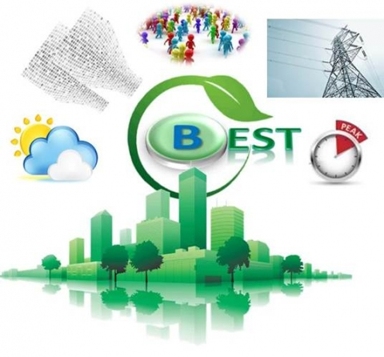
Team Members
Principal Investigator: Yining Qin, staff scientist
Entrepreneurial Lead: Edward Silva, program manager, UC Davis Child Family Institute for Innovation and Entrepreneurship
Industry Mentor: Roger Werne, Industry Partnerships Office deputy director.
Technology Description: The Commercial Building Energy Saving Technology (C-BEST) is an optimized control technology for heating, ventilating, and air conditioning systems in commercial buildings such as office, retail, and computer centers. C-BEST provides an online, real-time, deep learning, self-modeling, and advanced non-linear optimization solver technology. The technology is a risk-free, low-cost, capital-free investment in energy efficiency that has the potential to reduce a commercial building’s energy bill by 10% - 30%. Through Lab-Corps, the C-BEST team expects to learn business skills and find potential customers while piloting market-ready applications for their technology.
National Renewable Energy Laboratory - Eco-AC
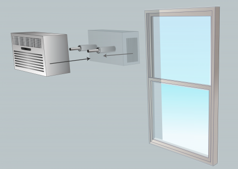
Team Members
Principal Investigator: Chuck Booten, senior engineer
Entrepreneurial Lead: Jon Winkler, senior engineer
Industry Mentor: Ed Williams, Blackstone Entrepreneurs Network in Colorado.
Technology Description: Eco-AC is a modular air conditioning solution intended to replace current window air conditioners. Units are installed by drilling one or two small holes in an exterior wall and clamping the evaporator and condenser to each other, eliminating the eyesore of traditional window air conditioner units while maintaining a simple installation. This also reduces air leakage while improving operating efficiency and comfort. Eco-AC includes multiple patent-pending components developed at the National Renewable Energy Laboratory (NREL). The team members hope Lab-Corps will help them capitalize on the poor aesthetics of window air conditioners, lack of differentiation between current products, and lack of brand-awareness/loyalty while targeting homeowners, property managers, and rental tenants.
National Renewable Energy Laboratory - WISDEM
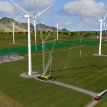
Team Members
Principal Investigator: Rick Damiani, senior engineer
Entrepreneurial Lead: Katherine Dykes, senior engineer
Industry Mentor: Sandy Butterfield, president, Boulder Wind Consulting.
Technology Description: Typical wind plant systems are complex and often involve coupled systems—what happens in one part of the plant affects other parts of the plant. A commercialized version of a NREL's research tool, WISDEM, will solve this problem by creating a “virtual,” vertically integrated wind plant that enables stakeholder collaboration for optimizing wind turbine and plant design, control, and operation. With the help of Lab-Corps, the team hopes to develop a business model for a full graphical interface with database support, turning WISDEM into a commercially viable tool that will help industry design and develop the next generation of wind energy systems.
Oak Ridge National Laboratory - CI-ReClad
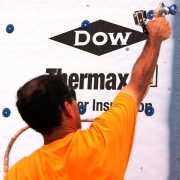
Team Members
Principal Investigator: Diana Hun, research and development staff
Co-Principal Investigator: Som Shrestha, research and development staff
Entrepreneurial Lead: Mahabir Bhandari, research and development staff
Industry Mentor: Linda Jeng, building solutions market development and Customer Technical Support Center group leader, The Dow Chemical Company.
Technology Description: There are few technologies in the marketplace that help to cost-effectively retrofit building envelopes while addressing unique project requirements and allowing the building to maintain its normal operations throughout recladding. This team’s solution updates an existing Dow Chemical Company product, THERMAX Wall System (TWS), which combines the components of air, vapor, and water-resistive barriers while providing continuous thermal insulation with practical retrofit reclad application refinements. The integration and constructible details of these components would benefit the building architect, contractor, and owner by reducing retrofit complexity, time, and cost. The team members hope that Lab-Corps will help them evaluate the commercialization potential of the updated system, TWS – ReClad.
Oak Ridge National Laboratory - Tunation
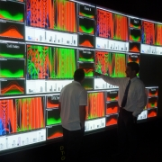
Team Members
Principal Investigator: Joshua New, project and proposal manager
Co-Principal Investigator: Aaron Garrett, professor and project software developer
Entrepreneurial Lead: Jibonananda Sanyal, project co-principal investigator and software systems engineer
Industry Mentor: Varun Singh, Facebook product manager and recent senior vice president of Sefaira.
Technology Description: Tunation is a software technology that will allow energy service companies to cheaply and quickly identify the energy- and cost-saving potential for commercial and residential buildings. It uses new “zero touch” audit and simulation technologies to cost-effectively learn and adapt a building model in real time. By reducing costs, Tunation will allow small- and medium-sized businesses to afford these services, expanding the market and ultimately reducing the nation’s energy bill. Through Lab-Corps, the team hopes to learn more about what it takes to build a successful business, working closely with industry to identify any potential roadblocks.
Pacific Northwest National Laboratory - Co-Culture Green
Team Members
Co-Principal Investigator: Alex Beliaev, senior scientist
Entrepreneurial Lead: Hans Bernstein, scientist
Industry Mentor: Tracy Warren, executive director, FedIMPACT, LLC.
Technology Description: The binary culture technology helps reduce greenhouse gas emissions while also generating value-added products and biomass. It captures fugitive methane and carbon dioxide gases and, with help from a co-culture, biologically converts them into products such as biofuel, feedstock, and fertilizer. The team is targeting oil and gas drilling companies as potential customers, so Lab-Corps will provide the opportunity to gauge interest through industry-member interviews, but will also allow the team to explore alternate applications for the technology, including other types of industrial waste streams.
Pacific Northwest National Laboratory - HYDRA
Team Members
Principal Investigator: Luke Gosink, scientist, project investigator, and technical team lead (machine learning)
Entrepreneurial Lead: Doug McMakin, senior engineer, project investigator and engineered systems account manager
Industry Mentor: Melissa Sherman, director of technology and business development at IP Group Inc. and director of commercialization programs at FedIMPACT, LLC.
Technology Description: HYDRA is a statistical framework for designing an aggregate forecasting model that is less susceptible to variability. It iteratively tunes, augments, and then combines the strengths from an ensemble of competing methods to generate a single model that is more accurate and reliable than any ensemble constituent. HYDRA’s possible applications range from predicting short- and long-term energy needs in the power grid (one industry collaborator reduced forecasting errors by 65% and is estimated to save up to $100 million annually) to detecting early indications of disease in cattle (reducing the typical $5 billion annual loss). Lab-Corps will help this team to more clearly define and demonstrate HYDRA’s potential applications and transform it into a high-impact technology.
Pacific Northwest National Laboratory - STARS
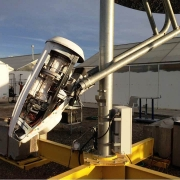
Team Members
Principal Investigator: Bob Wegeng, project manager/engineer
Entrepreneurial Lead: Chris Klasen, project and proposal manager
Industry Mentor: Peter Brehm, Infinia Technology.
Technology Description: The Solar Thermochemical Advanced Reactor System (STARS) uses the sun’s rays to convert natural gas or biomethane feedstock into chemical energy resulting in energy-rich gas that is ready for commercial use, including hydrogen production, methanol production for on-site use, and electrical generation. Lab-Corps will help the team understand and characterize the potential market uses for STARS, develop a more efficient prototype suitable for manufacturing, and create a commercialization pathway based on industry input.
Pacific Northwest National Laboratory - Sub Lambda
Team Members
Principal Investigator: Kyle Alvine, senior research scientist
Entrepreneurial Lead: Scott Butner, consultant and retired PNNL senior research scientist
Industry Mentor: Brian Kornish, program manager-government contracts, PPG Industries, Inc.
Technology Description: The technology under development is a potentially low-cost, passively switchable dynamic coating for windows that is based in part on subwavelength materials. As window temperature increases beyond a specified point, the coating will reversibly block infrared radiation, but not visible light. This allows for beneficial dynamic solar heating of a building accompanied by daylighting. If successful, this technology has the potential to provide significant energy savings for commercial and residential buildings. Through Lab-Corps, the team hopes to better understand and characterize potential market uses for its technology.
More Information
For information about the commercialization of Lab-Corps technologies or to find contact information for a specific DOE laboratory, visit the DOE Energy Innovation Portal. For inquiries about the Lab-Corps program, email us.